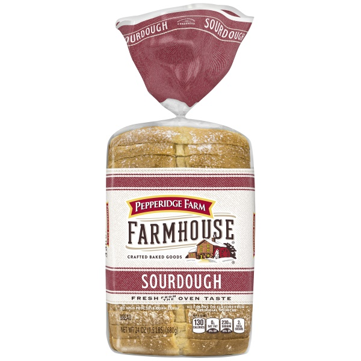
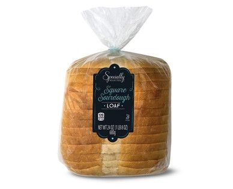
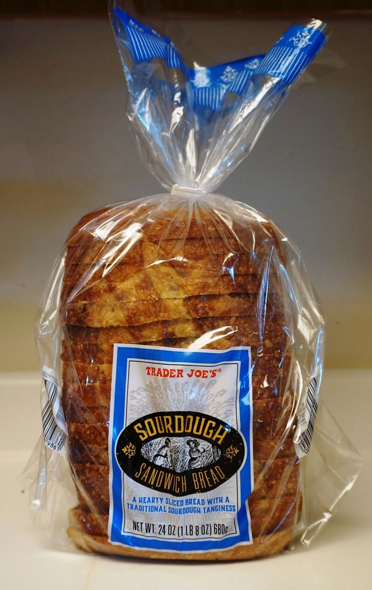
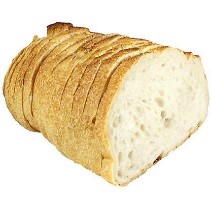
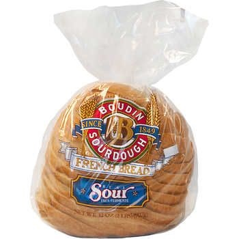

What is the best Sourdough?
Millions have been wondering — what IS the best Sourdough bread?? It is a question that has plagued human beings for centuries. Luckily, we collected the world’s best Sourdough experts together to bring you the five best Sourdough brands on the market at the moment.
5. Pepperidge Farm
Not enough sourdough taste. Almost like regular white bread. Don't fall for this trick. Their cinnamon & raisin bread and cookies are great, though.

4. Aldi
Not enough sourdough taste. Good texture, though

3. Trader Joe's
Good sourdough taste, pretty good texture. I recommend getting the pre-cut loaf instead of the batard for better texture

2. Central Market
Good taste, good texture. You can’t go wrong with this bread.
About: We make our Sourdough from scratch in-store from a levain starter and bake it fresh each day. Slow fermentation gives this beautiful, golden-brown, crusty bread its inviting aroma, complex flavor, and moist crumb.

1. Boudin
Pure unadulterated sourdough taste. The BEST sourdough bread brand, possibly ever.
About: THE ORIGINAL SAN FRANCISCO SOURDOUGH™ In 1849, Isidore Boudin struck gold with four simple ingredients: flour, water, salt, and mother dough. See how San Francisco’s history is baked into every bite. Our secret is in our mother dough—a magical combination formed by local varieties of wild yeast and lactobacillus—plus a few other helpful microbes—to create a natural source of fermentation that allows Boudin sourdough to rise without using commercial yeast. The key ingredient in our sourdough since 1849, she thrives only in the fog-cooled climate of San Francisco. Our mother dough imparts the famous Boudin flavor and texture unlike any other bread in the world.
